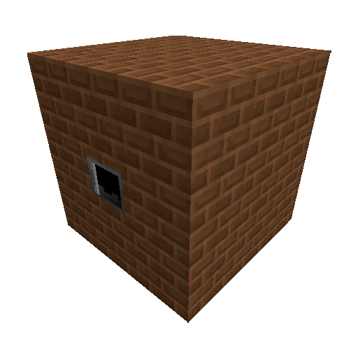
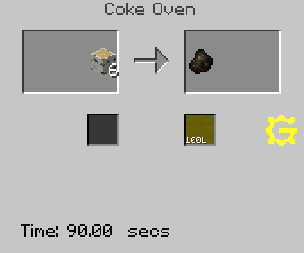
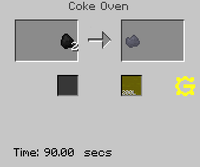

Коксовая печь - это многоблочная машина, добавленная модификацией Impact Core.
Предназначена для производство древесного/коксового угля и креозота на начальных этапах.

Coke Oven в собранной форме
Печь выполняет рецепты, которые можно увидеть в NEI.
Необычной механики у данной машины нет.
Важное замечание - все рецепты выполняются за одинаковое время: 90 секунд.

Коксование древесины

Коксование угля
Для постройки этого мультиблока вам понадобится блок Coke Oven Brick.
Primitive Output Hatch x1
Primitive Output Bus x1
Primitive Input Bus x1
Люки обслуживания имеют такие же текстуры как и Coke Oven Brick.
Остальные люки обслуживания не требуются.
*Не забудьте включить мультиблок с помощью Soft Mallet